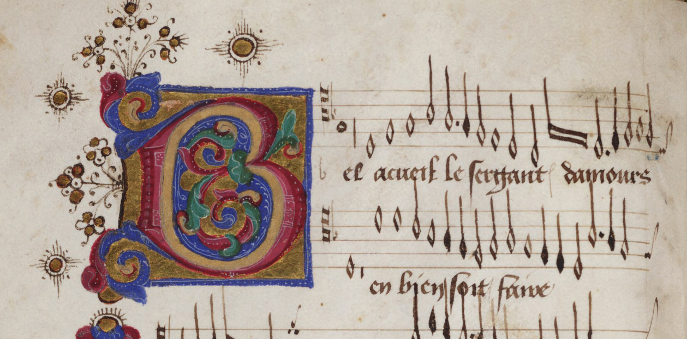
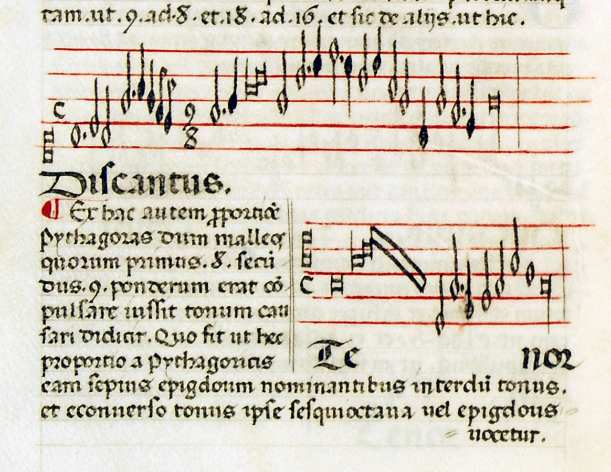
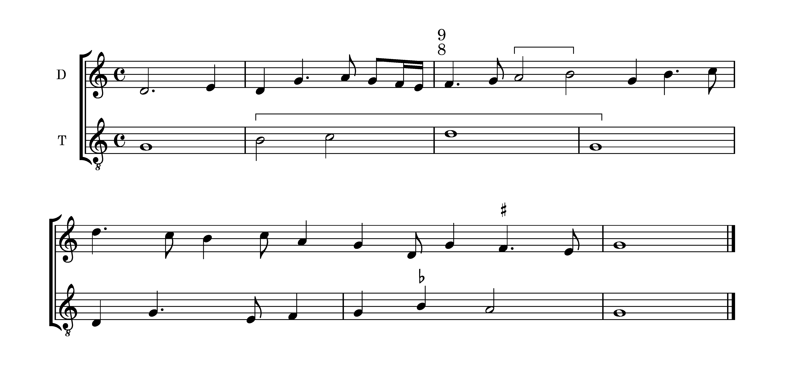
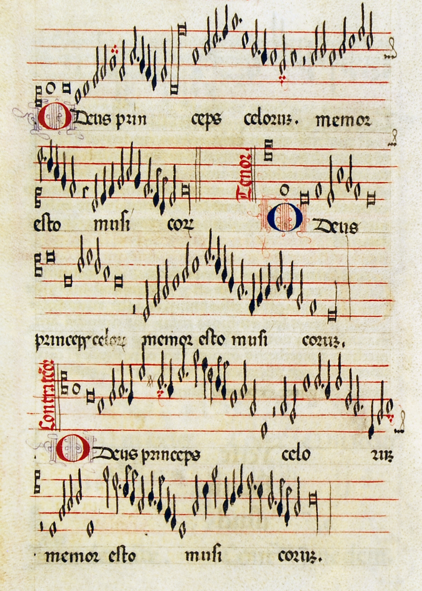
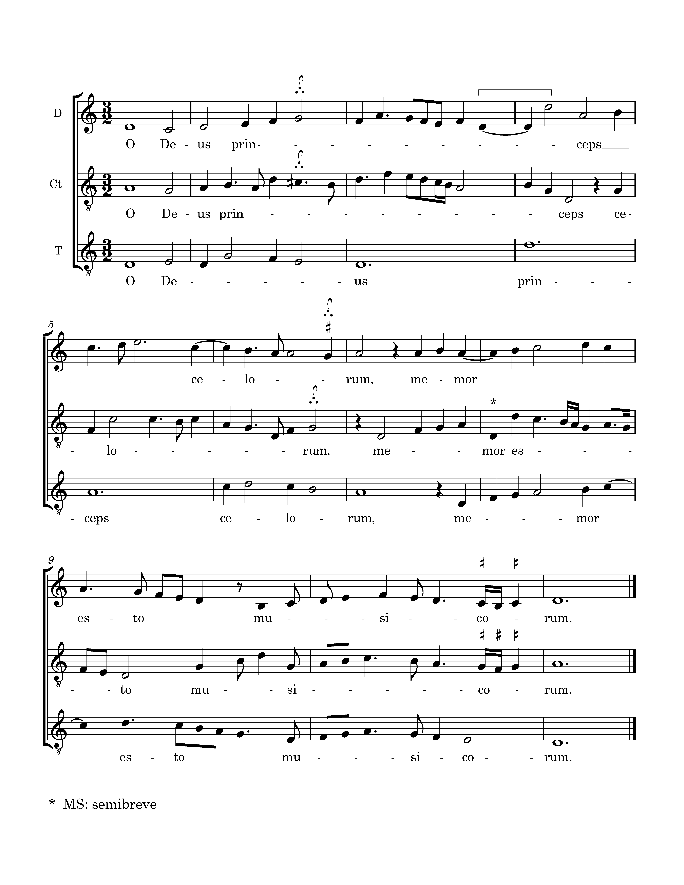

			<div class="content">
				<div class="contentbox article">
<h2>Dahlhaus’s Principles and Tinctoris’s Ears: Music Theory as Rhetoric</h2><p class="author">Stefano Mengozzi (University of Michigan)</p>
<p class="preamble">I owe a large debt of gratitude to Ronald Woodley for inviting me to deliver the keynote address at the 2014 Tinctoris conference in London, and for the invaluable feedback he has offered on many versions of this paper. I also wish to thank Bonnie Blackburn, James Borders, Jeffrey Dean, Edmund Goehring, William van Geest, Anne Heminger, Áine Heneghan, Nathan Martin, and Jean-Charles Robin for their stimulating comments on many of the points presented below, and to Christian Goursaud for his editorial assistance throughout all stages of publication. Any flaws and inaccuracies in my argument are of course my own. <a id="_Hlk34214120"></a>Translations are also mine unless otherwise stated.</p>
<p><span class="para-no" id="para-1">[1]</span>It seems that music-theoretical language may either constitute the very objects it represents, or offer no more than gross misrepresentations thereof. Brian Hyer, siding with the former camp, observes that Jean-Philippe Rameau often resorts to metaphorical images drawn from a broad range of cultural domains, including gender, politics, and economics – a richly associative rhetoric that ascribes a ‘distinctive [human] character’ to musical sounds and harmonic functions.<a href="notes.html#footnote-1" id="footnote-ref-1">1</a> To Hyer, such personifications are in the end no more than a projection of the linguistic persona of the author displaced into the musical text. As such, they undermine the natural and objective epistemology of harmony that the author has worked so hard to set up. Rameau’s own language, in other words, thwarts the possibility of stable and intersubjective musical meaning, reducing musical analysis to a kind of <a id="_Hlk4581859"></a>prosopopoeia that creates the very musical forms and structures that it purports to expose to critical <a id="_Hlk3294632"></a>scrutiny. In Hyer’s own words:</p>
<p class="blockQuote">Because figural language is so crucial to our conceptualisations of the tonic, dominant, and subdominant, it raises the possibility that the tonic, dominant and subdominant might be more discursive than musical in nature. It suggests that they are fictional entities, resulting from a personification of the music, and are therefore bereft of any certain or secure ontological status. These creatures of our imaginations are born of our compulsion to make sense of music, to pass music through the conceptual net of language, and as such must relinquish their claims to being ‘real’ in the sense of existing apart from language. In other words, the tonic, dominant, and subdominant arise more from the language we use to talk (and think) about music than from the music itself. Tonic, dominant and subdominant are not immanent in the music, but rather occur there as a result of our critical activities.<a href="notes.html#footnote-2" id="footnote-ref-2">2</a></p>
<p><span class="para-no" id="para-2">[2]</span>At the opposite end of the spectrum is Lawrence Kramer, who understands ‘musical entities’ as the Odradeks of Kafkian memory, that is to say, as ‘ontologically open things’ that are ‘neither objective nor subjective but an unstable blend of both.’<a href="notes.html#footnote-3" id="footnote-ref-3">3</a> Such instability is best articulated, Kramer continues, in a ‘necessarily informal and pragmatic manner’, i.e. through concepts and descriptions that strive to be trustworthy and plausible, and convey the impalpable shades of meaning and ‘energy’ radiating from even the simplest musical events (a diminished seventh chord, a subdominant, and a tonic, as Kramer's own examples go).<a href="notes.html#footnote-4" id="footnote-ref-4">4</a> Thus, in Kramer the same musical entities portrayed by Hyer as a figment of the analyst’s imagination overwhelm the ability of conventional language to adequately represent them:</p>
<p class="blockQuote">The norms that populate traditional musical discourse are now widely acknowledged to be constructions suited to particular styles and cultural contexts, but the character of the musical thing requires that we go a step further. Even within a relatively homogeneous framework these constructions are fictions, and fictions realised less often than we suppose. The question of which are realised in the given case can be settled only on an ad hoc basis; all are eligible, none inevitable.<a href="notes.html#footnote-5" id="footnote-ref-5">5</a> </p>
<p><span class="para-no" id="para-3">[3]</span>Of course, current disciplinary practice stands in the middle between Pigmalion’s stage and Kafka’s Odradek mansion. One might say that we manage to have our cake and eat it too, as we take neither music-theoretical language, nor (and much less) musical ‘things’ to be fictitious; quite to the contrary, we customarily portray both <em>res </em>and <em>verba</em> as full-fledged ontologies endowed with the power of engendering each other in a quasi-symbiotic relationship within the cultural context to which they belong. In other words, the dominant scholarly consensus is that once a music-theoretical language has acquired currency at a given time and place, it imposes not only a specialized nomenclature on musical materials, but also a well-defined conceptual grid that in turn (music being ultimately the product of human culture) affects the very ontology of the sound-structures and experiences that it opens up for critical scrutiny (though the opposite is also true, as the structures themselves beget the concepts). And if language is able to affect the ontology of music by imposing shared concepts on it, it follows that the history of music theory is not only the history of particular terminological and conceptual networks applied to music, but also, by logical extension, of the waxing and waning of musical ontologies.</p>
<p><span class="para-no" id="para-4">[4]</span>In the following pages I will reject such a methodology as rooted in idealism rather than history, outlining at the same time a corrective approach to music-theoretical language that is inspired by a number of modern scholars (including the ones cited above), as well as by select moments from the music theory of the Renaissance era – particularly from Tinctoris. If Hyer is surely going too far with his suggestion that tonal functions are no more than ‘creatures of our imaginations’, his point remains nevertheless refreshingly provocative, in that it reminds us that the conceptual toolbox of the music theorist is indeed rooted in a ‘figural’ and historically contingent understanding of reality.<a href="notes.html#footnote-6" id="footnote-ref-6">6</a> This conclusion, in turn, implies that unpacking the figural nature of that toolbox is a desirable strategy for coming to terms with the opacity and the layered histories of Kramer’s musical ‘things’: if we cannot reduce them (by good fortune?) under objective and unequivocal labels, we may perhaps grasp them by dissecting the figural language through which they have been constructed throughout history – constructed in the rhetorical, not ontological sense of the word. </p>
<p><span class="para-no" id="para-5">[5]</span>In a nutshell, I wish to articulate a rhetorical approach to the language of music theory, as it has manifested itself through history, that problematizes the key relationship between language, concepts, and the ‘brute materiality’ of sound objects. This implies placing the issue of language at the very center of the critical reflection into the nature of music theory as both a historically grounded and a systematic inquiry into musical phenomena. The term ‘language’ here is deliberately generic: it includes not only the specialized terminology specific to the discipline, but also terminologies and modes of argumentation borrowed from or shared with other disciplines, as well as the broader strategies of persuasion through which authors address particular audiences at particular times.<a href="notes.html#footnote-7" id="footnote-ref-7">7</a> The initial analysis of the claims and linguistic quality of a text, then, eventually might and even should lead to an inquiry into the rhetorical structure selected by a given author as the mirror of the thought process – conditioned by models of rationality, belief systems, affect, ideology, etc. – by which they come to know their musical objects, or, as Kramer may put it, by which they come to preliminarily objectify their ever-elusive musical ‘things’.</p><h3>Rhetoric as a Path to Knowledge</h3><p><span class="para-no" id="para-6">[6]</span>Regardless of how one views the thorny problem of the relationships among language, concepts, and reality, the process by which music theory reinvents its language and discursive strategies through time is not trivial or self-explanatory. Rather, it is at least partly context-driven, and contingent on a myriad of historical considerations. In other words, the historical evolution of terminology is directly linked to the history of concepts, yet at the same time independent from it. In the early 1990s, Ian Bent singled out ‘the dynamics of theoretical terminology, and the interaction between terms and concepts’ as a crucial area of investigation for understanding ‘the nature of music theory’.<a href="notes.html#footnote-8" id="footnote-ref-8">8</a> On the one hand, different terms may provide ‘diametrically opposite conceptualizations’ of a musical object (the German and French analytic terminologies of the eighteenth century, for instance, characterize a fugal exposition alternatively as a linear or a circular process); on the other hand, the same term may be employed to convey multiple meanings (for example, the semantic area covered by the German <em>Zergliederung</em> has shifted considerably through the centuries, variously referring to thematic fragmentation<em>, </em>motivic development, and analysis).<a href="notes.html#footnote-9" id="footnote-ref-9">9</a> Many similar cases populate the Latin music theory of earlier centuries: witness, for instance, the term <em>tonus</em>, which throughout pre-modern times designated alternatively a prosodic accent, a pitch in musical space, a particular interval, a scale or octave species, and various other subcategories of those general semantic areas.<a href="notes.html#footnote-10" id="footnote-ref-10">10</a></p>
<p><span class="para-no" id="para-7">[7]</span>All this is not to suggest that the scholarly investigation of the language of music theory has been slow to come, for – quite to the contrary – it has been part of the research agenda within the discipline for much of the twentieth century, down to the present time. Landmark studies from the 1960s and 1970s by Milton Babbitt, John Rahn, Benjamin Boretz, and others, dealt with the issue of language as part of a broader discussion on the nature of music-theoretical concepts and of musical explanation.<a href="notes.html#footnote-11" id="footnote-ref-11">11</a> Recent contributions to this topic, to name only a few, include monographs on Rameau and Schenker, an article on the abstract conceptual oppositions informing eighteenth-century music theory, and a study of the emergence of subjectivity in Western music theory between the sixteenth and eighteenth centuries from a philosophical perspective inspired by Descartes and Foucault.<a href="notes.html#footnote-12" id="footnote-ref-12">12</a> </p>
<p><span class="para-no" id="para-8">[8]</span>Scholars of Latin music theory have also dealt with this issue. To the list belong Ronald Woodley’s 1987 article on Johannes Tinctoris’s <em>Proportionale musices</em>, with its provocative suggestion that renaissance music theory be read ‘as literature’;<a href="notes.html#footnote-13" id="footnote-ref-13">13</a> a 1996 article by Christopher Page that develops Woodley’s thoughts on the literariness of musical treatises into a perceptive analysis of the metaphors, synesthetic references, and intertextuality in Tinctoris’s <em>Complexus effectuum musices</em> and <em>De inventione</em> <em>et usu musice</em>;<a href="notes.html#footnote-14" id="footnote-ref-14">14</a> Susan Fast’s 1996 study of the late-medieval genre of the <em>summa musicae</em> from the perspective of its discursive voices (ranging from dialogism to heteroglossia and polyphony), along the lines identified by Russian literary theorist Mikhail Bakhtin;<a href="notes.html#footnote-15" id="footnote-ref-15">15</a> Leofranc Holford-Strevens’s study of the adoption of humanistically inspired terminology and norms of stylistic propriety by renaissance authors ranging from Ciconia to Gaforus and Glarean;<a href="notes.html#footnote-16" id="footnote-ref-16">16</a> Cristle Collins Judd’s monograph on the rhetoric of exemplarity and intertextuality in Italian and German music theory of the sixteenth century;<a href="notes.html#footnote-17" id="footnote-ref-17">17</a> and Dorit Tanay’s study of the intellectual underpinnings of fourteenth-century mensural theory.<a href="notes.html#footnote-18" id="footnote-ref-18">18</a> In different ways, these studies propose rhetorical readings of music-theoretical texts as a means of highlighting the ways in which those texts construct music-theoretical knowledge for certain audiences in particular cultural contexts. The contributions by Woodley and Fast are especially relevant to this study, and for that reason I will now discuss them more in detail.</p>
<p><span class="para-no" id="para-9">[9]</span>The guiding thesis of Susan Fast’s insightful article<em> </em>is that the dialogical structure typically on display in the late-medieval <em>summae</em> of authors such as Jerome of Moravia and Magister Lambertus is not simply a rhetorical mode of choice for delivering particular contents thought to be independent of their mode of delivery, but rather a carefully thought-out strategy on the part of the author for calibrating his own position vis-à-vis the subject matter under discussion. By stringing together various definitions of <em>musica </em>from a number of <em>auctores</em>, for instance, Jerome hints at a sort of meta-definition that ‘resides in the dialogic agreement amongst [them].’<a href="notes.html#footnote-19" id="footnote-ref-19">19</a> Citing Julia Kristeva’s discussion of Bakhtin, Fast compellingly argues that the dialogical and non-linear textuality of these treatises is the antithesis of a monologic text such as the epic poem, which assumes a causal approach to language, and ‘a <em>belief</em> in the literal sense of the word’.<a href="notes.html#footnote-20" id="footnote-ref-20">20</a> The plurality of voices of the <em>summa</em> invites its readers to think critically by assessing the areas of disagreement and overlap among the various definitions, and even to formulate their own definitions. In this sense, the <em>summa </em>is an open text, and the deliberate self-effacement of its author – who pulls the ropes backstage by selecting the definitions to feed his readers – is well suited to capture the ontological openness of ‘things’ like music. </p>
<p><span class="para-no" id="para-10">[10]</span>In his own seminal contribution on the textuality of renaissance music theory from a quarter-century ago, Ronald Woodley expresses misgivings about the then prevailing attitude toward such theory, which in his view reduced the medieval author ‘to the position of silent accomplice to an act of simple verification.’<a href="notes.html#footnote-21" id="footnote-ref-21">21</a> The texts, he observes,</p>
<p class="blockQuote">are culled and dissected for specific technical or notational points in order to validate our own interests; or else those precious references to real pieces of polyphonic music or composers are assiduously sought out, which we hope will assist in establishing chronology, or transmission, or specific evidence for performance at a particular location at a particular time, and hence, once again, to vindicate our sometimes naïvely positivistic argumentation.<a href="notes.html#footnote-22" id="footnote-ref-22">22</a></p>
<p><span class="para-no" id="para-11">[11]</span>Such an approach to early musical writings may be fully justified, as their authors often provide actual information on the musical culture of their time. Yet the moment those same sources offer <em>theories </em>of musical phenomena, they arguably no longer speak to us as witnesses – or, at the very least, not only as such – but rather as the more or less informed proponents of schools of thought and perspectives that are in many ways partial or objectionable. A factual reading of language, when applied to the latter cases, is bound to lead to distortions and misinterpretations. </p>
<p><span class="para-no" id="para-12">[12]</span>Decades after its publication, Woodley’s article still makes a compelling case for listening carefully to the different rhetorical registers of music-theoretical texts – all the more so if historically distant from us; in other words, renaissance music theory calls to be studied ‘as literature’. Our awareness of a text’s rhetoric, Woodley argues, is crucial for ascertaining the author’s intended audience and self-awareness, i.e. of his own strategy for presenting himself as a qualified ‘orator’ on that particular subject. Thus, Woodley interprets Tinctoris’s modeling of the prohemium of his <em>Proportionale musices</em> (early 1470s) on Cicero’s <em>De oratore</em> as designed to ‘enhance his credibility’ as an author.<a href="notes.html#footnote-23" id="footnote-ref-23">23</a> By deliberately evoking Cicero’s words, Tinctoris’s text appears more eloquent – if only to those who are aware of the <em>dissimulatio </em>strategically deployed in it<em> </em>– and thus more worthy of the reader’s <em>benevolentia</em>.</p>
<p><span class="para-no" id="para-13">[13]</span>Yet, there is more than stylistic <em>imitatio </em>here. Tinctoris adopts Cicero’s historical narrative as well, as he also comes to see music history through the same rhetorical lens through which Cicero had viewed and reflected on the evolution of the art of oratory in antiquity. As Woodley points out, in his <em>De oratore </em>Cicero had praised the achievements of Greek oratory as a way of extolling its later Roman counterpart (to which Cicero himself belonged). Tinctoris’s basic <em>inventio </em>in the <em>Proportionale </em>was to model the recent history of ‘art music’ after the Ciceronian narrative, whereby the English composers of Dunstable’s generation replace the Greek orators, while the Franco-Flemish composers of Tinctoris’s age (presumably including Tinctoris himself) match the ‘Roman’ pinnacle of the art as described by Cicero. While the full scope of Tinctoris’s argument (i.e. that polyphonic music has the same status, and brings the same level of distinction to its practitioners as oratory) will be apparent only to those learned readers who are sensitive to the Ciceronian overtones of Tinctoris’s text, the <em>captatio </em>is also designed to resonate with less trained readers by virtue of the vividness of its covertly Ciceronian language.<a href="notes.html#footnote-24" id="footnote-ref-24">24</a> </p>
<p><span class="para-no" id="para-14">[14]</span>Even more noteworthy to begin with is the distinct heteroglossic quality of the prohemium, that is to say, the author’s choice of resorting to history as a way of introducing a treatise on proportions, the quintessential topic of <em>musica speculativa</em>. By seeking to combine past with present, and <em>musica speculativa</em> with <em>musica practica, </em>Tinctoris<em> </em>structures his argument in a way that is <em>rhetorical </em>beyond mere considerations of style: his radical choice to bypass the tradition of proportion treatment in <em>musica speculativa</em>, centered on intervallic proportion, and to concentrate instead on purely rhythmic proportions, was arguably directed at presenting the topic not as an absolute truth, or <em>sub specie aeternitatis</em>, but rather in a new articulation that would attract the interest of his readers (I will discuss this point more in detail in the final part of this article).</p>
<p><span class="para-no" id="para-15">[15]</span>Rhetoric, as understood in the humanist era from Lorenzo Valla to Erasmus and beyond, was more than a method for speaking persuasively. Rather, it was regarded first and foremost as a broader discipline for constructing effective arguments beginning with the initial <em>inventio</em> – the ‘discovery’ of new truths about any given topic. It may be understood as a way of thinking about the world, in addition to as a method for communicating such thinking. Thus, the practice of rhetoric had direct epistemological implications, in that it regulated the way in which new knowledge was ‘found’ and communicated to an audience. Furthermore, humanist epistemology was distinctly rhetorical – or dialogical – in character, in the sense that it did not run exclusively on the deductive method of Aristotelian logic, used in philosophical and theological argumentations of the scholastic era, privileging instead a holistic kind of knowledge that relied on experience as much as on rational deduction, and was rooted in the fundamental assumption that the multi-layered and ever-changing nature of reality, far from being reducible to a set of universally valid truths, is knowable only in its more or less probable interrelationships, viewed from the perspective of the observer. <a href="notes.html#footnote-25" id="footnote-ref-25">25</a></p>
<p><span class="para-no" id="para-16">[16]</span>Thus, in the rhetorical tradition language – the principal means by which those interrelationships are <em>argued</em>, and in this sense ‘established’ – actively shapes the human knowledge of the world. The orator’s ideal of delivering a well-organized and persuasive argument also implies an integrated and open-ended model of knowledge that brings all the possible objects of discourse into relationships with one another.<a href="notes.html#footnote-26" id="footnote-ref-26">26</a> The double purpose and definition of rhetoric – conceived as both <em>elocutio</em>, or persuasive speech, and <em>inventio</em>, or knowledge structured in argumentative form – is central to the renaissance understanding of rhetoric, as shown for instance in Erasmus’s <em>De copia</em> (1512), which deals with ornamented speech in its first part (<em>copia verborum</em>) and with techniques for ‘discovering’ arguments (<em>copia rerum</em>) in the second.<a href="notes.html#footnote-27" id="footnote-ref-27">27</a> Following Aristotle, Erasmus emphasizes the technique of arguing the view of an ideal opponent (<em>argumentum in contrarias partes</em>, which is tantamount to ‘playing devil’s advocate’) as a proven method for exploring all sides of an issue, thus also for testing theories about the phenomenal world.<a href="notes.html#footnote-28" id="footnote-ref-28">28</a></p>
<p><span class="para-no" id="para-17">[17]</span>By outlining a rhetorical approach to interpreting music-theoretical texts, this study seeks to counterbalance the ‘essentialist’ reading of language that, as I wish to argue, continues to shape the methodology, the values, and the core agenda of music theory. The facile acceptance of such an essentialist premise amounts to endorsing an epistemology grounded on linguistic idealism – the belief that linguistically formulated concepts have a direct impact on musical ontologies and that, consequently, language is a transparent medium granting unconstrained access to those ontologies.<a href="notes.html#footnote-29" id="footnote-ref-29">29</a> For instance, we embrace an essentialist approach to music-theoretical language when we interpret the various scale sets that have punctuated the history of Western music theory – the systems of the church tones, the eight or twelve modes, or of the major and minor keys to name only the most significant ones – as the <em>de facto</em> manifestations of a <em>Zeitgeist</em> that regulate musical practice from a (supposedly) deeper conceptual level, so that a ‘key’ is by definition something radically different from either a ‘mode’ or a ‘tone’, and octenary ‘modality’ must be regarded as a separate entity altogether from its dodecachordal alternative. In similar fashion, one of the tenets of historically informed musical analysis is that new music-theoretical paradigms cannot be applied backwards to earlier repertories, but only forward to new ones, because it seems anachronistic to point to the existence of musical ontologies – say, the Aeolian mode, functional harmony, or meter – before they were ushered in by the new linguistic paradigms.</p>
<p><span class="para-no" id="para-18">[18]</span>Despite its stated objectives of striving for a historically informed reconstruction of the past, this scholarly orientation disregards the actual historical circumstances in which specific musical phenomena become the object of music-theoretical inquiry from a particular standpoint, as well as the frequently circuitous process by which specialized language becomes yoked to those phenomena and is eventually accepted (or rejected) by a musical community. The model of historicism that typically informs the studies of musical structure and musical meaning in the pre-modern era has been slow to realize that the linguistic and ontological domains are and have historically been brought into alignment with each other through a process of rhetorical mediation; thus, such model has not sufficiently taken into account the possibilities that the history of music-theoretical language may, and likely should, be examined independently of the history of the musical ontologies designated by such language (i.e. the facts, the events, the patterns, and so on, however parsed and experienced in the mind). </p>
<p><span class="para-no" id="para-19">[19]</span>To read music theory rhetorically, then, is to approach it indeed as a kind of literary genre that uses language creatively in the interest of offering a compelling representation of a musical reality that exists <em>out there </em>in preter-linguistic form (which is not to say, of course, in a preter- or pre-conceptual one). From this perspective, the history of scale systems appears no longer as the unfolding of self-enclosed and mutually exclusive entities, but rather as the record of the changing functions of scales at various stages of musical culture (pedagogical, compositional, analytical, etc.) and of the growing knowledge of the workings of diatonic space (for instance, the way in which scales may be transposed or transformed into one another). A scale (or, as I would argue, the thing that has been designated throughout history with terms such as ‘scale’) may be the ultimate musical Odradek that resists modern attempts to reduce it to mutually exclusive linguistic objectifications. More humbly, rhetoric strives to make language stick to the thing, minus the reduction.</p>
<p><span class="para-no" id="para-20">[20]</span>In line with these premises, this study strives to highlight the role that rhetorical <em>inventio</em> plays in the music writings of Johannes Tinctoris as a method for creating new and interconnected knowledge – a method that comes into play, for instance, when he describes mensural notation as a particular application of the general topic of the arithmetical proportions, or when he brings rhythmical considerations to bear on the topic of dissonance.<a href="notes.html#footnote-30" id="footnote-ref-30">30</a> Viewed from this perspective, language is concerned not so much with isolating musical facts and ontologies <em>per se</em>, but rather with highlighting the meaningful links between them – where meaningfulness is primarily (which is not to say exclusively) a function of the unique position of the observer. </p>
<p><span class="para-no" id="para-21">[21]</span>Before illustrating the interpretive advantages offered by a rhetorical reading of music-theoretical texts (as it may apply to select passages from Tinctoris), I will review an example of what I call the ‘ontological’ approach to those same texts. Carl Dahlhaus’s account of the history of Western harmony provides an ideal foil for this discussion because of the especially active role it ascribes to music-theoretical language in defining different stages of that history.</p><h3>Harmony as an Inner Musical Principle</h3><p><span class="para-no" id="para-22">[22]</span>In current academic discourse, ‘harmony’ is virtually synonymous with the notion of ‘harmonic tonality’ which Dahlhaus set forth in his <em>Habilitationschrift</em>, completed in 1966 and published two years later.<a href="notes.html#footnote-31" id="footnote-ref-31">31</a> The ambitious goal of Dahlhaus’s <em>Studies</em> was to offer an alternative to the presentist theory proposed by Hugo Riemann, who had understood tonality as a natural and unchanging principle that had gradually affirmed itself throughout European history, culminating with the masterworks of the Classical and Romantic tradition on the one hand, and with Riemann’s own theorizing on the other. By casting his monograph as a study on the ‘emergence’ of tonality, Dahlhaus highlighted the historically contingent nature of the harmonic principle, thus counterbalancing the materialist bent that informed not only Riemann’s position on the subject, but also the burgeoning discipline of music theory in the USA in the 1960s and 1970s.<a href="notes.html#footnote-32" id="footnote-ref-32">32</a> Dahlhaus’s contribution on this subject can only be regarded as an extraordinary achievement, and remains to this day the starting point for an investigation of the modal tradition of music theory vis-à-vis the tonal conceptualizations of later times, although the story of the transition from ‘modality’ to ‘tonality’ has also been told from non-Dahlhausian perspectives.<a href="notes.html#footnote-33" id="footnote-ref-33">33</a></p>
<p><span class="para-no" id="para-23">[23]</span>Central to Dahlhaus’s interpretation of the concept of harmonic tonality is the distinction between harmony as an empirical phenomenon, rooted exclusively in the materiality of musical sound, versus harmony as a holistic concept involving specific structural principles and cognitive acts that are brought to bear on the sound structures by the members of a musical community. <a href="notes.html#footnote-34" id="footnote-ref-34">34</a> Thus, in the entry ‘Harmony’ for <em>The New Grove Dictionary</em>, Dahlhaus points out that</p>
<p class="blockQuote">the concept of harmony refers less to actual musical structures than to the structural principles underlying intervals and their combinations or chords and their relationships. … However, harmony considered as a structural principle is just as much an intrinsic part of ancient and medieval music as it is of the tonal system of modern times.<a href="notes.html#footnote-35" id="footnote-ref-35">35</a></p>
<p><span class="para-no" id="para-24">[24]</span>Yet, despite being an integral part of Western music throughout its long history, the harmonic principle has been operating under different conditions at different times. One of the overarching theses of Dahlhaus’s <em>Studies</em>, summarized in the <em>Grove</em> article,<em> </em>is indeed that the transition from medieval music to ‘the tonal system of modern times’ turned the relationship between musical structure and harmonic principle on its head: whereas in pre-modern music, ‘harmony’ was at best a by-product of counterpoint (‘intervallic composition’), in the modern era it came to function as an active musical agent that shapes musical structure from within, enabling for instance the emergence of the central tonal concept of ‘chord’ as a ‘directly given unit,’ and of Rameau’s theory of the fundamental bass.</p>
<p><span class="para-no" id="para-25">[25]</span>The core relationship between musical structures and musical principles that Dahlhaus sets forth in the <em>Studies </em>would be convincing if it could be demonstrated that the two factors – which he regards <em>de facto</em> as the complementary components of musical ontologies – generally marched in sync throughout history, so that a direct link might be posited between the historical emergence of particular compositional behaviors (such as triadic sonorities, a particular handling of dissonance, the orientation of musical phrases around keynotes, and so on), and their early linguistic articulations in the musical treatises. However, the history of Western music too often does not support such correlation; Dahlhaus himself repeatedly observes that it is impossible to interpret a particular sound pattern as necessarily informed by one or another principle.<a href="notes.html#footnote-36" id="footnote-ref-36">36</a></p>
<p><span class="para-no" id="para-26">[26]</span>But if, by Dahlhaus’s own admission, music-theoretical principles and musical structures are easily detachable from one another, then how do radically different principles – say, ‘intervallic’ vs. ‘chordal’ composition – become yoked to particular structures – say, a three-note vertical sonority? Such a task is performed by music-theoretical writings, which in Dahlhaus’s history of harmonic tonality operate as the outward manifestation of the dominant forms of musical consciousness at any given time, with the power to usher in and phase out the ‘underlying’ principles of Western music, and to somehow transform musical structure from within without altering its audible components.</p>
<p><span class="para-no" id="para-27">[27]</span>Dahlhaus’s essentialist approach to music-theoretical language leads him to ascribe unequivocal and monological meanings to key concepts such as ‘chord’, ‘function’, ‘cadence’, ‘horizontal vs. vertical space’, etc., and to limit their validity within neatly, if artificially, defined historical contexts. Thus, the label ‘chord’ (<em>Akkord</em>) to Dahlhaus is only applicable to a particular object that can be understood as a ‘directly given unit’ (<em>unmittelbar gegebene Einheit</em>); its lower-level ancestor, ‘intervallic construct’ (<em>Intervallsatz</em>) cannot be referred to as a ‘directly given unit’, just as ‘chord’ cannot designate a mere ‘intervallic’ object.<a href="notes.html#footnote-37" id="footnote-ref-37">37</a> Even though Dahlhaus at times strives to present these conceptual oppositions as dialectically related, he treats them in the end as unbridgeable entities, because he does not entertain the possibility that changes at the linguistic or conceptual level may not necessarily correspond to changes at the material or ontological level. Nor, for that matter, at the perceptual one: the problem of the <em>Einheit </em>of chord in Dahlhaus is a metaphysical one, entirely unrelated to the question of the different modes of hearing through which the listener will come to experience such <em>Einheit</em>. For this reason, the <em>Studies </em>as a whole read less as an investigation into the origin or emergence of ‘harmonic tonality’, and more as a comparative analysis of two musical universes that are portrayed from the start as having had very little in common to begin with.</p>
<p><a id="PARA_28"></a><span class="para-no" id="para-28">[28]</span>For a clear example of this methodological orientation, consider the key conceptual opposition set up in Dahlhaus’s <em>Studies</em> between <em>clausula formalis</em> (a dyadic contrapuntal progression from a major sixth to an octave) and perfect authentic cadence (the tonal V–I <em>Kadenz </em>and its vernacular equivalents)<em>.</em><a href="notes.html#footnote-38" id="footnote-ref-38">38</a><em> </em>Dahlhaus writes: </p>
<p class="blockQuote">A harmonically tonal interpretation of the Ionian and Aeolian clausulas [<em>Klauseln</em>] is possible from as early as when their external forms are no longer distinguishable from those of the major and minor cadences [<em>Dur- und Mollkadenzen</em>], thus since 1500. But such an interpretation is absolutely necessary [<em>unumgänglich</em>] only from the second half of the 17th century, when the conception of what is harmonically tonal asserted itself in the parlance of the theorists [<em>sich die harmonisch-tonale Auffassung in der Sprache der Theoretiker durchsetzte</em>].<a href="notes.html#footnote-39" id="footnote-ref-39">39</a></p>
<p><span class="para-no" id="para-29">[29]</span>Here Dahlhaus entertains the view that the <em>clausula formalis </em>gradually evolved in the direction of the authentic cadence in a material sense, thus allowing a measure of flexibility in the meaning of the Latin label. At the same time, the conceptual gap between <em>clausula </em>and <em>cadence</em> ultimately proves too wide to bridge, because the latter is not so much the product of a historical process, but rather of ‘the conception of what is harmonically tonal’ that came to inform ‘the parlance of the theorists.’<a href="notes.html#footnote-40" id="footnote-ref-40">40</a> Given the scope and the arguments of the <em>Studies, </em>such an expression is more than a figure of speech. By concentrating on the disembodied ‘parlance,’ rather than on the authors who labored to hammer it out, Dahlhaus bypasses entirely the question of its historicity, treating it as if it emanated from some metaphysical agency or <em>Zeitgeist </em>(the use of a reflexive verb, <em>sich durchsetzen</em>, may be significant in this regard). The (admittedly daunting) question is, what exactly causes music-theoretical ‘principles’ to ‘assert themselves’ at particular moments in history and with those particular linguistic articulations? A satisfactory answer is likely to regard music-theoretical ‘parlance’ as a form of understanding that develops in particular circumstances through a process of creative <em>inventio</em>, in dialogue with the structures and patterns of musical sound (likewise subject to historical change). From this perspective, it is entirely possible that ‘the parlance of the theorists’ at times may have imposed new linguistic concepts on to ‘tonal’ practices that had been materially in place for generations – witness the case of ‘Ionian clausulas’ – and the product of more or less different conceptual universes.</p>
<p><span class="para-no" id="para-30">[30]</span>Counterbalancing Dahlhaus’s conclusions, recent research has amply demonstrated that the old conceptualizations are remarkably resistant. For instance, Robert Gjerdingen begins his chapter on the Galant cadences (which he titles ‘<em>Clausulae</em>’), by observing that the ‘perceived sense’ of melodic closure articulated by medieval writers in due course became the basis of polyphonic closure, first in two-voice contexts, then in multi-voiced chords. Thus organist and theorist Johann Gottfried Walther (1684–1748), in his composition manual of 1708 described as a <em>clausula formalis perfectissima </em>what is now known as a ‘perfect authentic cadence’.<a href="notes.html#footnote-41" id="footnote-ref-41">41</a> Gjerdingen observes that</p>
<p class="blockQuote">Generations of nineteenth- and twentieth-century music students have learned about musical phrase endings – cadences – from textbooks on harmony. This chord-centered view of musical articulation was fully appropriate to the aims of general musical education in the Romantic age, but it is too coarse-grained for an esoteric, courtly art like galant music. … Walther, following the lead of Andreas Werckmeister (1645–1706), looked at clausulae more melodically, as was then the norm. For him, each of the four voices performed its own clausula, participating as an integral part in the “perfection” of the whole.<a href="notes.html#footnote-42" id="footnote-ref-42">42</a> </p>
<p><span class="para-no" id="para-31">[31]</span>Gjerdingen’s epistemology is here at the opposite end of Dahlhaus’s <em>Untersuchungen</em> (which he himself translated into English), as it suggests that the evolution of the concept of cadence cannot be charted as a succession of mutually opposing and abstractly formulated principles; such history, rather, is better conceived as the product of the alternative rhetorical constructions of it that have been proposed in different contexts. Thus, it is not in the least surprising that the two organists cited by Gjerdingen, tied to thorough-bass practice and contrapuntal teaching, would not let go of the old melodic approach to the cadence (i.e. the old way to ‘look’ at it), just as the modern tradition of <em>Harmonielehre</em> offered a new ‘view’ that was attuned to the ‘[more idealistic?] aims of general musical education in the Romantic age’. Along these lines, Ludwig Holtmeier has argued compellingly that the Italian eighteenth-century traditions of thoroughbass and <em>partimenti </em>assumed non-Ramellian notions of chord and harmonic functionality that were conveyed <em>in nuce </em>by the Rule of the Octave.<a href="notes.html#footnote-43" id="footnote-ref-43">43</a> However, this enormously influential music-theoretical ‘culture’ (Holtzmeier’s term) has long remained under the shadow of the <em>Harmonielehre </em>tradition because, unlike the latter, it did not leave a written trace in the form of ‘scientific’ texts <em>à</em> <em>la </em>Rameau, and could be easily dismissed by modern musicology as run-of-the-mill <em>Generalbasslehre</em> for practitioners.<a href="notes.html#footnote-44" id="footnote-ref-44">44</a></p>
<p><span class="para-no" id="para-32">[32]</span>Such contributions directly call into question the familiar tendency to dismiss similarities of musical structure across time as ‘superficial,’ when unsupported by ‘deeper’ conceptual continuities. The assumption that harmony as audible sound without the ‘correct’ cognitive (and arguably aesthetic) validation of an ‘underlying’ concept is quite a different thing from harmony as a concept materialized into audible sound is at the core of the scholarly ethos<em> </em>that continues to guide the analysis of early music. Yet, to embrace such an epistemology in the name of historical authenticity is more than a little ironic, as the trope of surface vs. depth itself is a hallmark of Romantic idealism, as Wye Allanbrook has pointed out.<a href="notes.html#footnote-45" id="footnote-ref-45">45</a> By the same token, following Holtmeier, surely no trace of ‘harmonic tonality’ will be detected in renaissance music, if such an endeavor hinges largely on the extent to which the music theory of the time can be shown to conform to the standards of the Ramellian/Riemannian <em>Harmonielehre</em>.<a href="notes.html#footnote-46" id="footnote-ref-46">46</a> In fact, the surface vs. depth metaphor can easily be turned on its head: the very resilience of the sonic surface across time could be taken, paradoxically, as a reliable sign of its historical and cultural depth, precisely because it implies that such sonic ‘surface’ underwent only relatively marginal change in the face of radical transformations at the conceptual level. </p>
<p><span class="para-no" id="para-33">[33]</span>Thus, rather than simply measuring the ‘sonic surface’ against the changing principles as if in a causal relationship, one may also fruitfully assess the latter against the former, and attempt to reconcile the diverging modes of conceptualizations with one another – or at least to provide plausible historical justifications for them. For an example of how such a strategy might be pursued, let us now turn to several well-known passages on ‘harmony’ in Franchinus Gaforus’s <em>Practica musicae</em> (1496) and the <em>De harmonia musicorum instrumentorum opus </em>(published in 1518, but already completed by 1500).<a href="notes.html#footnote-47" id="footnote-ref-47">47</a> In the <em>Practica</em>, Gaforus observes that the consonance of the fifth may be divided into a major third and a minor third ‘by a kind of imitation’ of the harmonic mean (3:2), producing a concord that is ‘sweeter’ (<em>suaviorem</em>) than the harmonically divided octave (i.e. the octave divided to produce a lower fifth and an upper fourth).<a href="notes.html#footnote-48" id="footnote-ref-48">48</a> In the later <em>De harmonia </em>Gaforus distinguishes harmonies derived from the harmonic division of the fifth from those derived from the division of sixths and tenths at the ‘sonorous’ mean (Gaforus’s term), which produces less harmonious results.<a href="notes.html#footnote-49" id="footnote-ref-49">49</a> </p>
<p><span class="para-no" id="para-34">[34]</span>Hugo Riemann took these and other passages from Gaforus as the incipient signs of ‘“harmony” in the modern sense’.<a href="notes.html#footnote-50" id="footnote-ref-50">50</a> Dahlhaus questioned such an interpretation, pointing out that Gaforus’s ‘harmonies’ of three sounds are not the manifestation of the modern harmonic principle; rather, they are derived by performing the harmonic mean on the intervals of the octave and the fifth. Thus, chords that are functionally equivalent in modern harmony (such as c-c'-g' and c-g-g') are in fact no longer so when viewed from the perspective of their mathematical origin (to Gaforus, the harmonically derived octave-twelfth c-c'-g' is <em>perfect</em>, while the arithmetically derived fifth-twelfth c-g-g' is <em>imperfect</em>).<a href="notes.html#footnote-51" id="footnote-ref-51">51</a> Indeed, both in the <em>Practica</em> and in the 1508 <em>Angelicum ac divinum opus musice </em>Gaforus maintains that a harmony can only be obtained via a harmonic division of those consonances. As Blackburn points out, however, in the later <em>De harmonia</em> he concedes that harmony may also be obtained by dividing sixths and tenths through the ‘sonorous mean’, which is somewhat less perfect than the ‘harmonic’ one.<a href="notes.html#footnote-52" id="footnote-ref-52">52</a> </p>
<p><span class="para-no" id="para-35">[35]</span>Despite Dahlhaus’s caveat, Gaforus’s qualitative distinction between perfect and imperfect sonorities does little to obliterate the impression that the musical objects he describes in these passages are <em>de facto</em> indistinguishable from what will be later called ‘chords’, even though Gaforus is of course far from developing his initial insight into a full-fledged theory of chords.<a href="notes.html#footnote-53" id="footnote-ref-53">53</a> A key detail disregarded by Dahlhaus is the affective language that complements Gaforus’s technical description of <em>harmonia</em>. When he describes his harmonically divided octaves as the means by which the composition ‘shines with a sweeter sonority’ (‘<em>qua musicus omnis concentus gratiore atque suaviore modulatione perfulget</em>’),<a href="notes.html#footnote-54" id="footnote-ref-54">54</a> and his harmonically divided fifths as ‘most sweet’ (‘<em>dulcissimum concentum … efficiunt</em>’),<a href="notes.html#footnote-55" id="footnote-ref-55">55</a> he is not merely describing in vivid fashion the special significance of those sonorities to his listening experience. Rather, these passages are rhetorical in the deeper sense that they point to the very locus of music-theoretical <em>inventio</em>, for it is arguably Gaforus’s <em>prima facie</em> experience of those musical ontologies, and his realization of the distinct aural pleasure he derived from it, that lead to the rational acts of sorting out these ‘harmonies’ into different categories, and of attempting to explain their nature and their marvelous effects to the ear. </p>
<p><span class="para-no" id="para-36">[36]</span>In her article on harmony in Gaforus, Blackburn ultimately observes that ‘the concept [of chord] certainly exists for [Gaforus], as we can see from his remarks, but it has to be ferreted out from circumlocutions’.<a href="notes.html#footnote-56" id="footnote-ref-56">56</a> To ‘ferret out’ one linguistic concept from an older one seems here a justifiable act of cultural translation: modern listeners still share with Gaforus the perception of <em>harmonia</em> as a discreet and blended sound pattern that may still be described as ‘sweet’ in and of itself (though its grammatical uses may of course have changed significantly). Thus, the points of conceptual overlap across time appear less forced and arbitrary, and more historically meaningful.</p>
<p><span class="para-no" id="para-37">[37]</span>In short: Gaforus’s own rhetoric is an invitation to endorse a view of music-theoretical language as rhetorically constructed, i.e. as overlaid on its objects <em>a posteriori</em>, a position implying that there is no privileged ontological relationship between a given label and its musical referent. In other words, it is to accept the possibility that the musical concept <em>chord</em> may have been historically in place even long before the linguistic formulation it received at a particular time and place. From this perspective, the consistent use of imperfect consonances in the ‘English discant’ of the fourteenth and fifteenth centuries appears to be a more significant turning point in the history of <em>chord</em> than the emergence of the label ‘chord’ in the Baroque era. </p>
<p><span class="para-no" id="para-38">[38]</span>A modern reader might rightly conclude, then, that there is at least an area of conceptual and perceptual overlap between Gaforus’s <em>harmonia</em> and the modern concept of ‘chord’ that also implies a linguistic overlap, so that an attempt to ‘ferret out’ one concept from the other appears justified. At any rate, around 1500 the notion that polyphony could be composed ‘harmonically’ by assembling consonances in the manner of building blocks, rather than ‘contrapuntally’, was well known to musicians, and no doubt practiced by budding composers who did not control the subtleties of voice-leading progressions. As Blackburn has shown in another study, Pietro Aron taught the technique in his <em>Toscanello in musica </em>of 1529, while Giovanni Spataro, in a letter to Giovanni del Lago of the same year, criticized the widespread practice of ‘composing harmony without studying the precepts of counterpoint’.<a href="notes.html#footnote-57" id="footnote-ref-57">57</a> In short, with his proto-theory of verticalities Gaforus was addressing an aspect of compositional practice that had been taking root in previous generations.</p><h3>Music Theory as Rhetoric: Lessons from Tinctoris</h3><p><span class="para-no" id="para-39">[39]</span>For several reasons, the music treatises by Johannes Tinctoris offer a rich opportunity for assessing the potential and the merit of a rhetorical approach to music theory. Not only did Tinctoris produce a relatively large amount of writing on musical matters; more importantly, he employed a wide range of rhetorical modes and registers (pedagogical, analytical, normative, critical, etc.), a sure index of the depth and versatility of his intellect.<a href="notes.html#footnote-58" id="footnote-ref-58">58</a> While he is often concerned with setting forth rules of musical well-formedness in a prescriptive and legalistic manner, proceeding from general principles to their individual applications, at other times he exhibits a marked empirical mindset and music-analytic interests that are virtually unprecedented in musical-theoretical writings of his time.</p>
<p><span class="para-no" id="para-40">[40]</span>An example of a treatise by Tinctoris that may be regarded as one of his most conservative from a doctrinal standpoint is the <em>Expositio manus </em>of <em>c</em>.1472.<a href="notes.html#footnote-59" id="footnote-ref-59">59</a> As earlier studies have pointed out, the treatise delivers what may be the most thorough presentation of the Guidonian hand committed to paper since the days of Johannes de Garlandia and Magister Lambertus in the mid-thirteenth century. It is not, however, the conservative character <em>per se</em> of the <em>Expositio </em>that I wish to highlight here, but rather its distinctly ahistorical approach to the conceptualization of the nuts and bolts of the gamut. With meticulous precision and thoroughness, each chapter of the treatise lays out all the possible articulations of each of the elements of the hand, as if the author expected them to be securely memorized: twenty <em>claves</em> (diatonic pitches indicated by letters) in twenty <em>loca</em> (the ‘places’ on the hand marked by letters and Guidonian syllables or <em>voces</em>); seven strings of <em>ut</em>-<em>la </em>syllables (<em>deductiones</em>) positioned on portions of the Gamut beginning on G, C, and F (<em>proprietates</em>); fifteen <em>coniunctiones</em> (diatonic intervals) in each <em>deductio</em>, and 52 <em>mutationes </em>(hexachordal mutations), all painstakingly listed.<a href="notes.html#footnote-60" id="footnote-ref-60">60</a> The end result no doubt constitutes one of the clearest examples of formalistic music theory from the Renaissance.</p>
<p><span class="para-no" id="para-41">[41]</span>The overarching message of the treatise is that all the elements of the hand are simply indispensable to all practical musicians: as forcefully stated in the <em>explicit </em>of the treatise the hand is a ‘foundation for music’ that ‘no one outstanding in music’ can afford to ignore.<a href="notes.html#footnote-61" id="footnote-ref-61">61</a> Yet, what Tinctoris’s <em>Expositio</em> emphatically does not do is explain to the reader how to use that veritable army of conceptual tools in order to actually sing a tune at sight – a discussion that would force him, in turn, to explain how the various layers of the hand function in relation to one another, which ones are logically prior to others, essential or dispensable for sight-singing, and so on. In other words, the <em>Expositio</em> <em>manus</em> is not a treatise driven primarily by practical considerations, despite its subject matter. Rather, it would seem that Tinctoris invites his readers – beginning with the dedicatee of the treatise, the singer Johannes de Lotinis – to relish the sheer operational complexity of the system for its own sake, as a sort of abstract, rationally constructed intellectual edifice. </p>
<p><span class="para-no" id="para-42">[42]</span><em>Contra</em>, we might imagine a fifteenth-century reader of the <em>Expositio manus </em>wishing to engage with the text rhetorically – against the grain of the text itself – by testing the value of its systematic arrangement to musical experience and its limits <em>qua </em>musical knowledge. Such a reader might wonder, for instance, whether the initial pitches of the Discantus of Antoine Busnoys’s <em>Bel Acueil</em> (the first song of the Mellon Chansonnier: <a data-toggle="collapse" class="figureReference" data-target="#Example21" href="#Example21">Example 2.1.</a><span id="Example21" class="figure collapse"><span class="figure-caption"><span class="figno">Example 2.1.</span>  Antoine Busnoys, <em>Bel Acueil</em> (beginning of Discantus). Mellon Chansonnier (New Haven, Yale University, Beinecke Rare Book and Manuscript Library, MS 91), fol. 1<sup>v</sup> (detail).</span></span>) should be regarded as <em>voces</em>,<em> notae</em>,<strong> </strong><em>loca</em>, or <em>claves</em>; or how the notated <em>clavis </em>(clef) at the beginning of the staff should be interpreted (again, does it indicate a <em>vox</em>,<em> </em>a <em>clavis</em>,<strong> </strong>or a <em>locus</em>?); or whether the identification of the <em>deductio/proprietas</em> should precede or follow the mental act of yoking the notated pitches to<em> voces</em>,<strong> </strong><em>notae</em>,<em> litterae</em>, or <em>claves</em>; or, finally, whether the most efficient way to sight-sing a melody is to juggle all of these conceptual props (and in what order), as opposed to dispensing with some of them altogether. Yet, the treatise does not encourage such contextual and practical reading; to put it another way, the rhetorical tone of its language highlights the distinctly non-rhetorical quality of the musical knowledge it conveys.<a href="notes.html#footnote-62" id="footnote-ref-62">62</a> </p>
<p><span class="para-no" id="para-43">[43]</span>Such dialogical exposition of the hand is actually found in the musical section of Gregor Reisch’s <em>Margarita philosophica</em> (first published in 1503), cast in the form of a conversation between a teacher and a student. As I have argued elsewhere, the discussion of the rudiments of notation provided by this text is unusually effective because the student’s pointed questions lead the teacher to discuss aspects of the topic that normally do not come to light.<a href="notes.html#footnote-63" id="footnote-ref-63">63</a> The dialogue is of course fictitious; yet the reader is given the impression that the teacher is thinking on his feet, even ‘discovering’ new sides of the issue as the conversation unfolds. In this format, language no longer ‘possesses’ the musical ontologies by pinning them down to fixed concepts and definitions, but rather (with Kramer) strives to capture them as moving targets, by approximation.</p>
<p><span class="para-no" id="para-44">[44]</span>Equally instructive is a comparison of Tinctoris’s treatise with Johannes Gallicus’s <em>Ritus canendi vetustissimus et novus</em>, written only a few years earlier (<em>c</em>.1458–1464). Gallicus’s treatise is diametrically opposed to Tinctoris’s not only for the harshly critical position it takes toward hexachordal solmization, but also because it unfolds in a thoroughly dialogical rather than declarative manner.<a href="notes.html#footnote-64" id="footnote-ref-64">64</a> A strong oratorical presence is sustained throughout the <em>Ritus</em> by several distinct strategies, including the author’s habit of directly addressing the reader in his prose (‘Cernis, lector …’; ‘Docete, quaeso …, o cantores’; ‘carissimi’); his occasional use of the first person (‘Censeo’; ‘Nam testor ego …’); his emotional outbursts against the six syllables<em>, </em>often described as a<em> </em>verbose and useless addition to training in <em>musica</em> (‘<em>ambages</em>’; ‘<em>superflua verbositas</em>’); his vivid metaphors (the six syllables as a ‘walking stick’ [<em>quodam baculo</em>] and a ‘superfluous ornament’ [<em>phylacteria</em>]); and his penchant for raising pointed questions about the technique, in order to explore it from all sides: see, for instance, the chapter header ‘Why Guido chose no more and no less than six syllables for singing, and why he combined the musical letters with those syllables.’<a href="notes.html#footnote-65" id="footnote-ref-65">65</a> In short, the entire treatise, aside from the portions in dialogue form, reads like a speech delivered to a live audience.</p>
<p><span class="para-no" id="para-45">[45]</span>Even more pertinent to this discussion is the marked historical nature of Gallicus’s argument. He presents the method of solmization merely as an ad hoc<em> </em>solution proposed by Guido for solving the particular problem of effectively training inexperienced singers (like a cane for those unable to walk on their feet).<a href="notes.html#footnote-66" id="footnote-ref-66">66</a> The six syllables that Guido ‘fabricated’ conveniently form a short diatonic segment of a major sixth spanning the three species of diatessaron (<em>ut</em>–<em>fa, re</em>–<em>sol, </em>and <em>mi</em>–<em>la</em>); for that reason those syllables are able to ‘express’ all songs.<a href="notes.html#footnote-67" id="footnote-ref-67">67</a> To further emphasize the contingent character of solmization, Gallicus reminds his readers that Guido proposed the method of six syllables without the ‘absurd’ system of <em>proprietates</em> and <em>mutationes</em>,<em> </em>and at any rate only as a temporary solution for the early stages of musical instruction.<a href="notes.html#footnote-68" id="footnote-ref-68">68</a> Instead, throughout his writings Guido advocates sight-singing with the method of the seven musical letters, which ‘our fathers’ – i.e. the earliest <em>musici</em> of the Church – had introduced before him. It is precisely that older method of singing that Gallicus would like to reinstate throughout the Christian Church, as the title of his treatise suggests. Yet Gallicus’s open-mindedness as a music pedagogue comes to the fore particularly at the end of the treatise, where, despite his earlier criticism of the system, he presents a simplified, mutation-free method of solmization for the die-hard <em>guidonistae</em> who wish to continue to sight-sing with the six syllables.<a href="notes.html#footnote-69" id="footnote-ref-69">69</a> In this sense, we may view Gallicus’s reform of solmization as the notable product of a mediating effort that honors the position of his opponents while validating his understanding of the original goals and internal mechanisms of the method. </p>
<p><span class="para-no" id="para-46">[46]</span>To summarize: the quasi-literary and historicizing qualities of Gallicus’s language do not simply add a human touch to the treatise. Rather, they are the rhetorical means by which the author comes to acquire his knowledge of the Guidonian hand, a multi-faceted and coherently organized knowledge that leads him to downgrade the method from a musical foundation to an (undesirable, in his view) pedagogical option. His implicit argument is that in order to understand what the hand is – its ontology as a music-theoretical tool – it is necessary to understand its history and function (thus it has to be examined <em>from the outside looking in</em>). The depth of his musical reconceptualization of the hand lies in the breadth and variety of the arguments on which it rests. By placing Guidonian solmization in historical perspective, Gallicus is able to lay out a crucial music-theoretical claim, namely that the six syllables are an ad hoc, dispensable method for singing, not a musical foundation. By contrast, the abstract language of Tinctoris’s <em>Expositio manus, </em>with its precise quantifications and formal definitions, flattens any sense of structural hierarchy among the components of the system, presented as fixed metaphysical and meta-historical entities.</p>
<p><span class="para-no" id="para-47">[47]</span>In contrast with the <em>Expositio</em>, Tinctoris’s <em>Proportionale</em> <em>musices</em> pursues a distinctly relational and historically grounded model of musical knowledge. Just as Gallicus had reviewed the diatonic foundations of music at some length in the first part of his treatise in order to mount a devastating critique of the Guidonian hand in the second one, so Tinctoris’s <em>Proportionale </em>surveys the arithmetical proportions not simply as a mandatory chapter of the music curriculum, but rather in order to enable his readers to critically assess vitally relevant issues of musical performance.<a href="notes.html#footnote-70" id="footnote-ref-70">70</a> Between the lines, the treatise tells us that the proportions do not just provide an abstract kind of musical knowledge, i.e. a learned rationale for dividing the monochord and for generating the pitches and the consonances of the diatonic system, as countless authors had demonstrated in more or less verbose fashion.<a href="notes.html#footnote-71" id="footnote-ref-71">71</a> Instead, they regulate the relative durations of the pitches of <em>musica mensurata</em>, which are then conveyed to the performers through notational conventions. </p>
<p><span class="para-no" id="para-48">[48]</span>The short section of the <em>Proportionale musices </em>on the <em>sesquioctava</em> proportion (from Book I, chapter 6) illustrates the rhetorical tone of the treatise particularly well, as it not only presents the subject from different perspectives, but it also highlights different roles that the author plays in the text. The text reads as follows: </p>
<p class="blockQuote">Under this type of proportion, as appears to the discerning mind, is included sesquioctava, which is the proportion in which the larger number compared to the smaller contains all the latter in it and, in addition, an eighth aliquot part of it, as 9 to 8, 18 to 16, etc., just as here: <a data-toggle="collapse" class="figureReference" data-target="#Example22a" href="#Example22a">Example 2.2a.</a><span id="Example22a" class="figure collapse"><span class="figure-caption"><span class="figno">Example 2.2a.</span> From Johannes Tinctoris, <em>Proportionale musices</em>, Book I, chapter 6, illustrating <em>sesquioctava</em> proportion: Bologna, Biblioteca Universitaria, MS 2573, fol. 175<sup>v</sup> (detail).</span></span> and <a data-toggle="collapse" class="figureReference" data-target="#Example22b" href="#Example22b">Example 2.2b.</a><span id="Example22b" class="figure collapse"><span class="figure-caption"><span class="figno">Example 2.2b.</span> From Johannes Tinctoris, <em>Proportionale musices</em>, Book I, chapter 6, illustrating <em>sesquioctava</em> proportion: edited in common-practice notation.</span></span>.</p>
<p class="blockQuote">In addition, when Pythagoras ordered two hammers to be struck together, the first of eight, and the second of nine units of weight, he learned that the interval of a tone was generated. Hence this proportion, which Pythagoreans quite often name <em>epogdous</em>, is sometimes called a tone and, conversely, the tone itself is named <em>sesquioctava</em> or <em>epogdous</em>.<a href="notes.html#footnote-72" id="footnote-ref-72">72</a></p>
<p><span class="para-no" id="para-49">[49]</span>Other treatises from Tinctoris’s time occasionally discuss the durational values of mensural notation in reference to the arithmetic ratios.<a href="notes.html#footnote-73" id="footnote-ref-73">73</a> Tinctoris’s achievement was arguably to bring those two separate chapters of musical training into alignment with one another, a rhetorical strategy that also involves references to copious musical examples drawn from the polyphonic repertory, as well as frequent epideictic remarks either praising or blaming aspects of the notational practices of the day (which Tinctoris, rightly or wrongly, attributes to the composers themselves).<a href="notes.html#footnote-74" id="footnote-ref-74">74</a> Thus, the treatise successfully turns a core topic of the <em>quadrivium</em>, invariably presented <em>sub specie aeternitatis</em>, into a grammatical issue having to do with the delivery of musical meaning, if only at the relatively low level of musical notation. In line with this disciplinary reorientation, Tinctoris changed the expository tone from the traditional <em>declaratio</em> to that of an <em>argumentum</em>, blending together mathematical knowledge and musical experience, proposing a model of interconnected modes of thinking that is exportable to other musical domains, such as vocal and instrumental ornamental practice, or proportional <em>super librum</em> extemporization’, such as is exemplified in the <em>Liber de arte contrapuncti</em>, Book II, chapters 19–27. </p>
<p><span class="para-no" id="para-50">[50]</span>If the <em>Proportionale</em> <em>musices</em> is structured rhetorically in the sense that it explores the cross-fertilization between different, though obviously related, branches of musical knowledge, Tinctoris’s <em>Liber de arte contrapuncti</em> is conceived rhetorically in the deeper sense that it seeks to mediate between opposites – not only between consonance and dissonance in general, a topic that was again amply discussed in earlier treatises by other authors, but more broadly between the rational control of dissonance vs. its use in contemporary compositions. For good reason, then, the section of <em>De arte contrapuncti </em>on dissonance (the final chapters of Book II) has been so often discussed in the secondary literature: at stake is the acceptable boundary of musical decorum in the last third of the fifteenth century and – even more importantly – whether the authority to set such a boundary rests in the hands of a Tinctoris or, alternatively, on the music makers of the time. Thus, in a sense the problem of dissonance is recast as an implicitly social and even a political one, to be solved by confronting the relative merits of carefully weighted arguments by different parties with a direct stake in the issue. </p>
<p><span class="para-no" id="para-51">[51]</span>Up until the last chapters of Book II, Tinctoris has been mapping the theory of counterpoint in thoroughly systematic fashion. Book I, on consonances (the fourth, the fifth, and the octave), is a painstakingly detailed survey of how to move from one consonance to the next, following a ‘mapping’ mode of theorizing that is also on display in the <em>Expositio manus</em>; the discussion takes into account vertical sonorities up to the triple diapason, or twenty-second. Book II offers a similar survey of what Tinctoris calls ‘discords’ (major and minor seconds, the tritone, major and minor sevenths, and their octave duplications) and ‘false concords’ (the diminished and augmented fifths, the diminished and augmented octaves, and their octave duplications) one by one, except that this time around Tinctoris does not explain how to use these vertical sonorities, because they lie beyond the strict limits imposed by musical grammar, despite being theoretically possible.</p>
<p><span class="para-no" id="para-52">[52]</span>The last twelve chapters of Book II, however, overcome the stark <em>a priori</em> distinction between acceptable and unacceptable sonorities that has governed the presentation thus far. It is not that discords <em>per se </em>are banned from counterpoint altogether, it turns out. Rather, the current practice of florid counterpoint shows that the deciding issue is their duration and their metrical placement.<a href="notes.html#footnote-75" id="footnote-ref-75">75</a> The master composers of the present time – so goes Tinctoris’s implicit argument – have demonstrated that discords can become tolerable and even enjoyable to the ear. But under which conditions? Here Tinctoris demonstrates remarkable perceptiveness and flexibility in extracting general rules from a rather murky scenario, as shown by the title and the opening lines of Book II, chapter 23:</p>
<p class="blockQuote"><em>That discords are not allowed in simple counterpoint, but in diminished, and first, how [it is done] in regard to the parts of the minima in each of the two prolations and in regard to the parts of the semibreve in minor [prolation].</em></p>
<p class="blockQuote">In simple counterpoint dissonances are simply and absolutely prohibited, but in florid counterpoint they are sometimes permitted in moderation. Whence it should be known that – if I may pass over the compositions of older musicians in which there were more discords than concords – almost all more recent musicians, not only composers, but also those singing <em>super librum</em>, in both major and minor prolation, having put a concord on the first or another part of the minim and, in minor, beyond this, on the first or even another part of the semibreve, place a discord of the same value or of a smaller note value on that immediately following. </p>
<p class="blockQuote">But on the other hand, in both major and minor prolation, a discord is almost always taken above the first part of the first of two minims, existing as a unit or separately in the same place, or of a minim by itself, and, additionally, in minor prolation above the first part of two semibreves also in the same place as a unit or separately, immediately preceding a perfection.<a href="notes.html#footnote-76" id="footnote-ref-76">76</a> </p>
<p><span class="para-no" id="para-53">[53]</span>We may read this densely technical prose as the rationalization of Tinctoris’s own experience. Like Gaforus trying to come to terms with the surprising ‘sweetness’ of triadic sonorities, Tinctoris must have grasped affectively the unwritten conventions by which the composers of his time turned various kinds of dissonances into musically meaningful events before<em> </em>he understood and explained them rationally.<a href="notes.html#footnote-77" id="footnote-ref-77">77</a> One may plausibly imagine such aural experience as a source of music-theoretical <em>inventio</em> that would generate new insights on the topic by rhetorically aligning domains of musical knowledge that had thus far remained unconnected, namely, counterpoint and mensural theory.</p>
<p><span class="para-no" id="para-54">[54]</span>In other words, at the root of the argument is Tinctoris’s intuition – no doubt matured through his life-long exposure to polyphony – that dissonance is not merely a spatial phenomenon, but also a temporal one amenable to musico-grammatical inflections that are open to investigation (after all, even the sequence of consonances needs to be regulated carefully, lest they also generate undesirable counterpoint). More precisely, time – which in this case includes musical time, but also the listener’s experience of it – functions in these chapters as a rhetorical ‘middle term’, a topic (<em>locus</em>) enabling a rapprochement between contradictory elements.<a href="notes.html#footnote-78" id="footnote-ref-78">78</a> Thus, Tinctoris is not ushering in a new principle of dissonance, as Dahlhaus might put it, so much as ‘rhetoricizing’ that key component of composition by revealing it as contingent on notions of musical meaning and decorum. Arguing along these lines, Michael Zimmermann has portrayed Tinctoris as a watershed figure who built his music theory not on the timeless mathematical principles of the <em>Tonsystem</em>, but on the musical works made possible by the <em>Tonsystem</em>.<a href="notes.html#footnote-79" id="footnote-ref-79">79</a></p>
<p><span class="para-no" id="para-55">[55]</span>Although Tinctoris’s much-debated handling of ‘false concords’ is ostensibly more restrictive, a closer reading of it suggests that he is leaving the door open for a more latitudinarian response (although the passage has produced conflicting interpretations, as shown below). Tinctoris is especially concerned with the <em>falsum diapente</em> (diminished fifth) in his discussion of this topic. In Book II, chapter 33, he flatly states that there is no place for such dissonances even in florid counterpoint (‘omnino sunt evitande’ as the title of the chapter goes), even though he acknowledges that they are encountered ‘most frequently among many, many composers’, producing as notable examples of this practice three musical excerpts from Faugues, Busnoys, and Caron.<a href="notes.html#footnote-80" id="footnote-ref-80">80</a> the following chapter grudgingly accepts those diminished fifths at cadences, obtained by sharpening the lower pitch by a chromatic semitone as defined by Marchetto of Padua (c#–g in measure 2 of Tinctoris’s own example, reproduced here in <a data-toggle="collapse" class="figureReference" data-target="#Example23a" href="#Example23a">Example 2.3a.</a><span id="Example23a" class="figure collapse"><span class="figure-caption"><span class="figno">Example 2.3a.</span> From D<em>e arte contrapuncti</em>, Book II, chapter 34, illustrating a false concord immediately before a cadence: Bologna, Biblioteca Universitaria, MS 2573, fol. 159<sup>v</sup> (detail).</span></span> and <a data-toggle="collapse" class="figureReference" data-target="#Example23b" href="#Example23b">Example 2.3b.</a><span id="Example23b" class="figure collapse"><span class="figure-caption"><span class="figno">Example 2.3b.</span> From D<em>e arte contrapuncti</em>, Book II, chapter 34, illustrating a false concord immediately before a cadence, edited in common-practice notation.</span></span>.)<a href="notes.html#footnote-81" id="footnote-ref-81">81</a> </p>
<p><span class="para-no" id="para-56">[56]</span>Not surprisingly, this passage is at the center of the ongoing discussion on the aesthetic boundaries of renaissance polyphony, one that directly impinges upon modern editorial orientations. Taking Tinctoris at his word, scholars such as Karol Berger and Peter Urquhart draw the conclusion that false concords should not be converted <em>ipso facto</em> into perfect consonances, but should rather be performed on rare occasions as notated.<a href="notes.html#footnote-82" id="footnote-ref-82">82</a> Alternatively, Margaret Bent has argued that the three examples should be interpreted differently from the perspectives of composition, notation, or performance, and that Tinctoris would indeed have expected the singers to normalize in performance the faulty intervals indicated by the composers.<a href="notes.html#footnote-83" id="footnote-ref-83">83</a> To support her argument, she observes that later versions of the three pieces redirect the counterpoint in such a way as to avoid the false concords altogether.<a href="notes.html#footnote-84" id="footnote-ref-84">84</a> </p>
<p><span class="para-no" id="para-57">[57]</span>Tinctoris, however, squarely lays on the composers’ shoulders the responsibility for trespassing the boundaries of acceptable dissonances; musical performance is not invoked as a potential solution to the dispute.<a href="notes.html#footnote-85" id="footnote-ref-85">85</a> Moreover, the expressions of high praise that he directs elsewhere to the same composers censored in chapter 33 implicitly takes the edge off his criticism.<a href="notes.html#footnote-86" id="footnote-ref-86">86</a> Although Tinctoris explains that he can only excuse these ‘mistakes’ by citing the Horatian motto that at times even Homer dozes off, the very fact that he allows the dissenting voice of the composers to be heard on this matter suggests that he is willing to grant at least a measure of authority to that long list of dozing Homers, implicitly second-guessing his own prohibition.<a href="notes.html#footnote-87" id="footnote-ref-87">87</a> Perhaps more importantly, Tinctoris’s <em>text </em>also acquires additional credibility on the subject as a result, once the reader realizes that it conveys the author’s position on the subject at the same time that it tests its limits, implicitly at least. After all, readers of <em>De arte contrapuncti </em>might have realized that the detailed account of dissonance in florid counterpoint at the end of Book II was prompted by the highly sophisticated deployment of dissonance in contemporary composition to begin with, so they may already have reached the conclusion, upon Tinctoris’s discussion of false concords, that certain parts of that messy topic have simply not been adequately understood quite yet.<a href="notes.html#footnote-88" id="footnote-ref-88">88</a></p><h3>Peroratio</h3><p><span class="para-no" id="para-58">[58]</span>A notable consequence of this last point is that it is Procrustean to constrain the study of the music of the distant past – the very notion of ‘distance’ and its synonyms being of course a function of our modern outlook into that past – within the epistemological boundaries set by contemporaneous theorists.<a href="notes.html#footnote-89" id="footnote-ref-89">89</a> Indeed, to follow Zimmermann, Tinctoris occupies a special place in the history of music theory precisely for having reconceptualized not just key aspects of the music of his time, but the very concept of music theory itself, away from a monolithic emphasis on ahistorical principles and toward a rhetorical model that aimed to offer compelling rationalizations of musical experience. Thus, Tinctoris may be most insightful as a music theorist when he creatively infers, or invents, putative principles out of his aural response to the music of his time, in addition to earlier teachings on the subject. In those moments he gains legitimacy as an author not only because of his willingness to let himself be guided by musical sound (rather than by his pre-conceptions about it), but also because of the dialogical nature of his music-theoretical method, which implicitly accepts – indeed invites – other rationalizations and other modes of listening.</p>
<p><span class="para-no" id="para-59">[59]</span>By the same token, the above-mentioned studies by Gjerdingen, Sanguinetti, and Holtmeier on the tradition of <em>partimenti</em> have demonstrated that to approach the history of Western harmony from a <em>Harmonielehre</em> perspective, wielded as a set of essentialized (and essentializing) principles organized into a coherent system, is bound to yield conclusions that misrepresent the theory and the practice of Tinctoris’s age as much as Rameau’s. Half a century after its publication, Dahlhaus’s <em>Untersuchungen</em> may now invite the pursuit of a distinctly non-Dahlhausian path, as the history of music theory appears more and more charged with the methodologically fraught task of taking into account the unstated concepts that may inform the musical choice of any given generation more pervasively than what was committed to writing.<a href="notes.html#footnote-90" id="footnote-ref-90">90</a> Music theory does not create musical objects by imbuing them with principles; rather, it articulates principles as a way of understanding musical objects that are bound to be known provisionally and contextually.</p>
				</div>
			</div>
